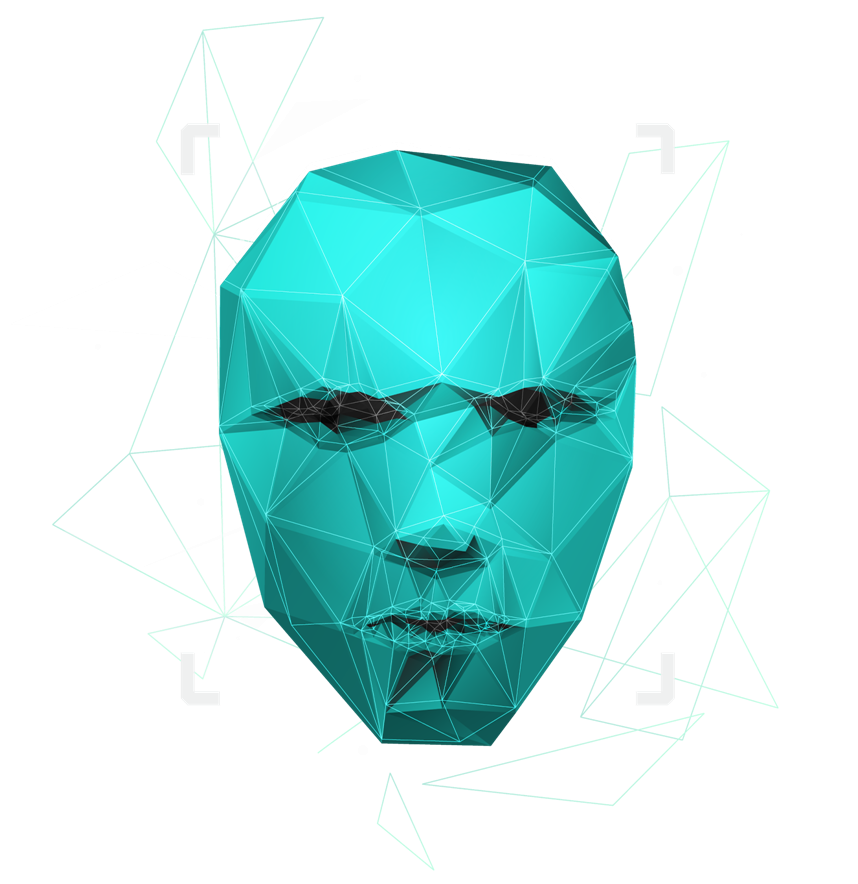
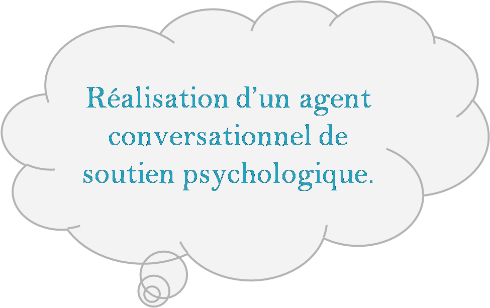
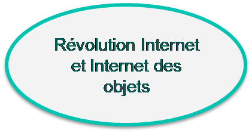
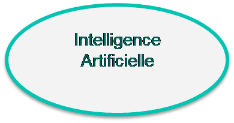
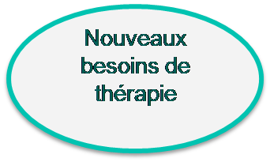
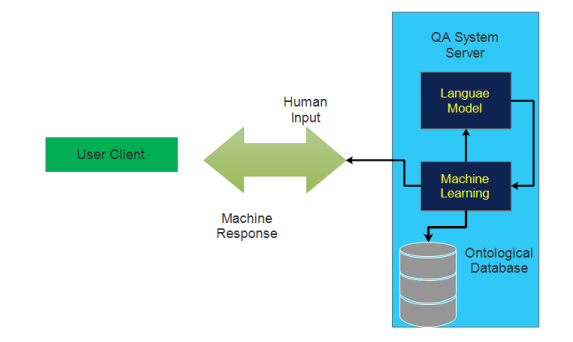
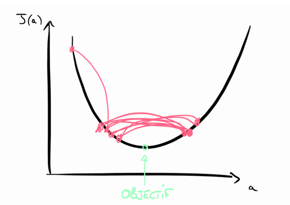
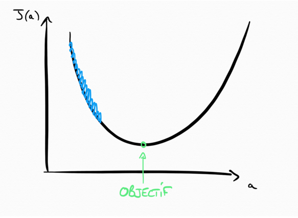

Réalisation d’un agent conversationnel de soutien psychologique
Elaboré par :
- Mhamdi Ahlem
- Zairi Rihem
Encadré par :
- Mr Mohamed Bjaoui
- Mr Ferid Helali
Jury :
- Mr Tarek Jalled
- Mr Hafedh Boukthir
Plan
Introduction
Introduction
   Cadre Général du Projet
Contexte de projet
Emily: est un agent conversationnel qui agir en tant que mentor ou conseiller pour personnes curieux dans des nombreuses problèmes psychologique
PROSSESUS DE GESTION DE PROJET
Scrum : est une méthodologie agile itérative et incrémentale. Il repose sur un travail d'équipe et un suivi continu à travers des réunions quotidiennes et périodiques.
La méthode CRISP a été au départ développée par IBM dans les années 60 pour réaliser les projets Datamining. Elle reste aujourd’hui la seule méthode utilisable efficacement pour tous les projets Data Science.
6
Chapitre 2 : Planification Et Architecture
Le traitement du langage naturel
est la capacité pour un programme informatique de comprendre le langage humain tel qu'il est parlé.
1
techniques de la PNL
1.Tokenisation
intents = json.loads(data_file)
for intent in intents['intents']:
for pattern in intent['patterns']:
w = nltk.word_tokenize(pattern)
words.extend(w)
documents.append((w, intent['tag']))
if intent['tag'] not in classes:
classes.append(intent['tag'])
2.Supprimer les mots vides
filtered_tokens = [w for w in intent if not w.is_stop]
print(filtered_tokens)
3
3.Normalisation
words = [lemmatizer.lemmatize(w.lower()) for w in words if w not in ignore_words]
words = sorted(list(set(words)))
classes = sorted(list(set(classes)))
print (len(documents), "documents")
print (len(classes), "classes", classes)
print (len(words), "unique lemmatized words", words)
pickle.dump(words,open('words.pkl','wb'))
pickle.dump(classes,open('classes.pkl','wb'))
4
4.Vectorisation
filtered_w[1].vector
5
Apprentissage en profondeur
L'apprentissage profond est un type d'intelligence artificielle dérivé du l'apprentissage automatique où la machine est capable d'apprendre par elle-même.
2
Les réseaux de neurones :communément appelés des réseaux de neurones artificiels sont des imitations simples des fonctions d’un neurone dans le cerveau humain pour résoudre des problématiques d’apprentissage de la machine
Chapitre 3: Solution Proposée
Architecture global
CHATBOT AVEC MODELE SEQUENTIEL
Un Séquentiel modèle est approprié pour une pile simple de couches où chaque couche a exactement un tenseur d’entrée et un tenseur de sortie

Les étapes du modèle séquentie
etape 1: Charger les données
intents = json.loads(data_file)
for intent in intents['intents']:
for pattern in intent['patterns']:
w = nltk.word_tokenize(pattern)
words.extend(w)
documents.append((w, intent['tag']))
if intent['tag'] not in classes:
classes.append(intent['tag'])
etape 2: Definir le modele
model = Sequential()
model.add(Dense(128, input_shape=(len(train_x[0]),), activation='relu'))
model.add(Dropout(0.5))
model.add(Dense(64, activation='relu'))
model.add(Dropout(0.5))
model.add(Dense(len(train_y[0]), activation='softmax'))
etape 3:Compiler le modele
sgd = SGD(lr=0.01, decay=1e-6, momentum=0.9, nesterov=True)
model.compile(loss='categorical_crossentropy', optimizer=sgd, metrics=['accuracy'])
Taux d'apprentissage
Taux d'apprentissage
etape 4:Adapter le modèle
history = model.fit(np.array(train_x), np.array(train_y), epochs=200, batch_size=5, verbose=1)
Chapitre 4: Etude ET Réalisation
Diagramme de Cas d’utilisation Globale
conclusion
Conclusion
Creation du chatbot